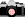
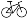

Myra VanInwegen's Ride Stories
Here's a sampling of my ride stories, including the complete set of
race stories. There are stories about road rides as well as MTB
rides (the latter are marked with a little picture of a mountain bike).
The stories with the camera icon have pictures (well, at
least one picture) as well as text. This may be a plus or a minus,
depending on what you're looking for!
- 
Touring in New York State (August 1985)
-
Touring in Oregon (June/July 1990)
- My first "real" century (September 1993)
- Myra does speed (rides) (July/August 1994)
- A double century (August 1994)
- Sub 6-hour Century (September 1994)
-
A BCP ride to Reading's Pagoda (September 1994)
- My first race (4 March 1995, NYC)
- My second race (19 March 1995, NYC)
- Race #3 (26 March 1995, Bloomsburg PA)
- Race
#4
(2 April 1995, State College PA)
- Race #5 (9 April 1995, Trenton NJ)
- Race #6
(15 April 1995, Prospect Park, Brooklyn NY)
- Race #7 (23 April 1995, Lower Providence PA)
- CRASH! (25 April 1995)
- Kent County Spring Fling
(26-29 May 1995)
- A ride in my hometown (July 1995)
- Philly to New York in one Day (4 Sept 1995)
- A long ride in New Jersey (29 October 1995)
- Baltimore! (November 1995)
- 
Newbie MTBer (24 February 1996)
- Race #8
(23 March 1996, Fairmount Park, Philadelphia)
-
MTBing in Wales (August 1996)
-
Off-road to Ely (September 1996)
- Cycling in Holland (April 1997)
-
Hills and Heather in North Yorkshire
(August 1997)
- A ride around Stevenage (September 1997)
-
Race #9: First MTB Race
(15 March 1998, Thetford Forest)
-
Wet and Cold in Cambridgeshire
(April 1998)
-
An Attempted Audax (April 1998)
-
Race #10: I think mud tires are a good idea
(26 April 1998, Highclere Castle)
-
Riding the Ridgeway (June 1998)
- Rough Stuff in the Moors (June 1998)
-
A Weekend in the Pennines (August 1998)
-
Ozzie Biking: The Blue Mountains (September 1998)
-
CUCC Goes to Wales (November 1998)
-
Race #11: Team Time Trial (20 March 1999, Hull)
-
A Completed Audax (April 1999)
-
The Pyrenees (April 1999)
- Return of the Century (June 1999)
- February Road Rides (February 2000)
-
The Half Monty (May 2000)
- Cambridge to York (June 2000)
-
Touring in Wales (July/August 2000)
-
The South Downs Way, Take 1
(September 2000)
-
Touring in Ireland (October 2000)
- She's got a ticket to Ryde (May 2001)
- Celebrating 5 years in the UK (May 2001)
-
Red Bull Mountain Mayhem (23-24 June 2001)
-
Scotland bike tour (July 2002)
- Cambridge to Kenilworth (August 2002)
-
A Weekend in Bury St. Edmunds (1-3 August 2003)
Myra's Bike Page